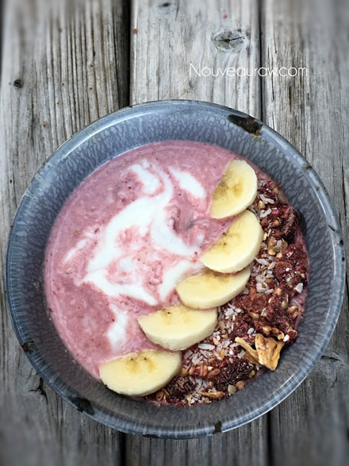
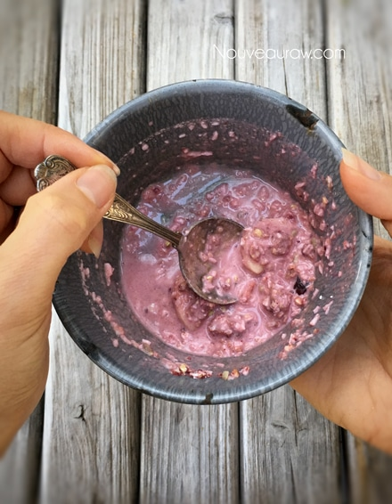
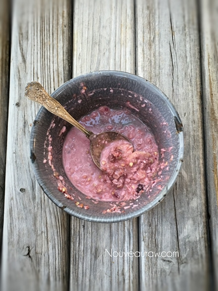

Tropical “Beet” Muesli

~ raw, vegan, gluten-free ~
There are many reasons that people hide certain foods… for example, to protect it, perhaps to hoard it for themselves, or maybe it’s to keep its calories out of sight. Many people hide beets, but for no other reason than that, they are afraid of them.
When most people purchase beets, it is usually for one of two reasons. The first being that they are vibrantly beautiful, for this reason alone, one might be compelled to buy them even if they have no real intention of actually eating them.
Secondly, people buy them because they know that they are healthy and darn-it!….today they are going to start eating healthy, even if their taste buds pack up and jump ship.
In either case, beets find their way in the shopping cart, giving the shopper a sense that they did their good deed for the day. They might even walk with a sense of pride about them as the gorgeous beet leaves gently hang over the edge of the cart.
But once home, it becomes a different story…. as the groceries are being put away, the beets get shoved to the back of the crisper drawer… hoping that they will never be seen again. Perhaps they will shrivel up and die before I get to them… the subconscious prays.
But this never happens. Beets are immortal, which is why they have become a staple food for those who understand and appreciate them. I am descended from some of these folks. Blame it on genetics.
yields 8 cups cereal
- 2 cups rolled, gluten-free oats, soaked
- 1 cup buckwheat, soaked
- 1/2 cup raw sunflower seeds, soaked
- 6 large, pitted Medjool dates, soaked in 1/2 cup hot water
- 1 Tbsp coconut oil, softened
- 1 medium red beet (92 g), rough chopped or beet pulp
- 1 Tbsp raw agave nectar
- 2 tsp ground Ceylon cinnamon
- 1/4 tsp Himalayan pink salt
- 20 drops liquid stevia
- 2 cups dried coconut flakes
- 2 cups dried pineapple, chopped
- 1/2 cup dried cranberries
Preparation:
- Soak the oats, sunflower seeds, and buckwheat as instructed in the links above.
- The oats and sunflower seeds take the longest… the buckwheat only needing 30 minutes unless you plan on sprouting it.
- Once done soaking the oats and buckwheat, drain and rinse them for about 2 minutes under cool water. Hand squeeze out the excess water.
- Drain, discard, and rinse the soak water from the sunflower seeds.
- Place all three in a large mixing bowl and set aside
- Re-hydrate the dates by placing them in 1/2 cup of hot water. Add the coconut oil, so it melts while the dates soften. Soak for 15 minutes.
- Soaking the dates will soften them, which will make it easier for blending.
- Rough chop the beet and place in the food processor, fitted with the “S” blade. Add the dates, coconut oil, soak water, agave, cinnamon, salt, and stevia. Process until it becomes a sauce.
- Pour the red sauce over the oats, (etc.). Mix well.
- Spread the batter, edge to edge on the teflex sheets that come with the dehydrator and dry at 145 degrees (F) for 1 hour, then reduce to 115 degrees (F) and continue to dry for roughly for 8 hours or until dry.
- I used 2 Excalibur dehydrator trays.
- Once dry, place in a large bowl and hand mix in the coconut flakes, pineapple, and cranberries.
- By doing this afterward, it prevents everything from turning a reddish/pink color. I wanted a variety of colors.
- Once cooled to room temp, place the dried batter into the food processor and pulse to a small crumble, porridge / muesli-like texture.
- Store in an airtight glass container on your counter for several weeks. Enjoy with nut milk or yogurt.
- Click (here) for my thoughts on raw agave nectar.
- Click (here) to learn why I use stevia.
- Dates are a fantastic ingredient for raw food recipes, click (here) to read why.
- Why do I specify Ceylon cinnamon? Click (here) to learn why.
- What is Himalayan pink salt, and does it matter? Click (here) to read more about it.
- Is coconut butter the same as coconut oil? Click (here) to find out.
- Are oats gluten-free? Yes, read more about that (here).
- Are oats raw? Yes, they can be found. Click (here) to learn more.
- Do I need to soak and dehydrate oats? Nope, Not required but recommended. Click (here) to see why.
Culinary Explanations:
- Why do I start the dehydrator at 145 degrees (F)? Click (here) to learn the reason behind this.
- When working with fresh ingredients, it is essential to taste test as you build a recipe. Learn why (here).
- Don’t own a dehydrator? Learn how to use your oven (here). I do, however honestly believe that it is a worthwhile investment. Click (here) to learn what I use.

While you were busy reading about the recipe… I ate the whole bowl. :)

I MIGHT have licked the bowl clean, but there isn’t any evidence of that.

© AmieSue.com